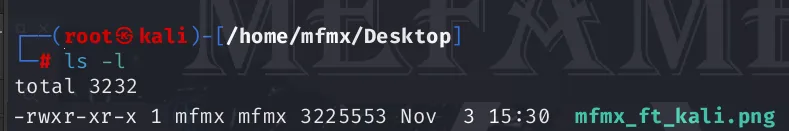
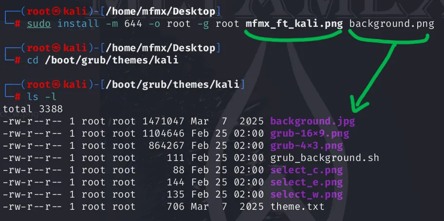
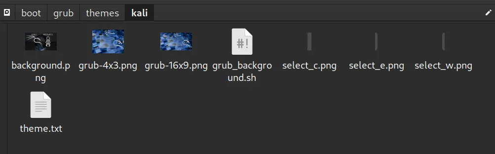
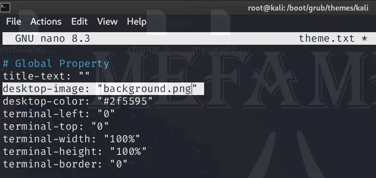
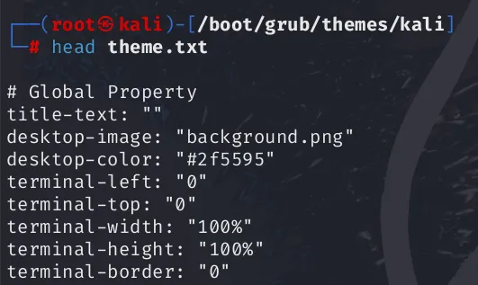
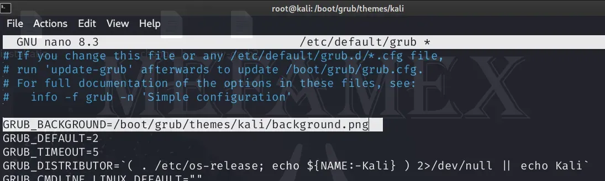

Kali Linux Bootloader Arkaplan Değiştirme
Giriş
Kali Linux için GRUB arkaplan görseli değiştirme — görsel hazırlama, tema dizinine kopyalama, theme.txt ve /etc/default/grub ayarları ile update-grub uygulaması. Adım adım rehber, uyumluluk ve izin ipuçları.
GRUB (GRand Unified Bootloader), Linux işletim sistemlerinde kullanılan bir bootloader'dır. GRUB, bilgisayarınızı başlatırken hangi işletim sistemini yükleyeceğinizi seçmenize olanak tanır. Ayrıca, GRUB'un başlangıç ekranında kullanılan arkaplan görselini değiştirebilirsiniz. Bu, bilgisayarınızı başlatırken daha kişisel bir deneyim sağlayabilir ve sistem önyükleme işlemi sırasında hoş bir görünüm sunabilir.
Yayınlanma tarihi: 07.03.2025 || Son güncelleme tarihi: 07.03.2025
Dikkat Edilmesi Gerekenler
- Görsel Formatı : GRUB (bootloader) genellikle PNG veya JPEG formatındaki resimleri destekler. PNG, daha iyi sıkıştırma ve şeffaflık desteği sunduğu için genellikle tercih edilir.
- Boyut: Genellikle 16x9 kullanılır. Resminizin çözünürlüğü, ekranınızın çözünürlüğüne uygun olmalıdır. Aksi takdirde, resim bozulabilir veya düzgün görüntülenmeyebilir. Yaygın olarak kullanılan çözünürlükler arasında 1920x1080, 1366x768 ve 1280x720 bulunur.
- Dosya Boyutu: Resmin dosya boyutu çok büyük olmamalıdır. Büyük boyutlu resimler, bootloader'ın yavaşlamasına veya yüklenememesine neden olabilir.
- Uyumluluk : Bazı eski bilgisayarlar veya BIOS'lar, yüksek çözünürlüklü resimleri veya belirli resim formatlarını desteklemeyebilir. Bu nedenle, kullanmak istediğiniz resmin sisteminizle uyumlu olduğundan emin olun.
- GRUB yapılandırma : Bu dosyayı düzenlerken dikkatli olun, çünkü yanlış değişiklikler sisteminizin başlatılamamasına neden olabilir.
- Ek İpuçları : GRUB Customizer gibi araçlar, GRUB yapılandırmasını grafiksel bir arayüz üzerinden düzenlemenize olanak tanır. Bu araçlar, yeni başlayanlar için daha kolay bir seçenek olabilir.
1) Arkaplan Görselini hazırlama
sudo install -m 644 -o root -g root new-image.png background.png- Bu komut,
new-image.pngadlı görsel dosyasını, gerekli izinlerle birliktebackground.jpgadıyla kopyalar. -
sudoile yönetici yetkileriyle çalıştırılır, böylece dosya sahibi ve grup ayarları root olarak belirlenir. - Bu işlem, bootloader başlangıç ekranında kullanılacak yeni arkaplan görselini ayarlamak için ilk adımdır.

2) Görseli Taşıma
sudo mv background.png /boot/grub/themes/kali- Bu komut,
background.pngadlı dosyayı/boot/grub/themes/kalidizinine taşır. -
sudoile yönetici yetkileriyle çalıştırıldığı için, dosyanın taşınması için gerekli izinler sağlanır. - Bu adım, arkaplan görselinin GRUB tema dizinine yerleştirilmesini ve bootloader başlangıç ekranında kullanılabilmesini sağlar.

3) Bootloader Tema Dizini Kontrolü
cd /boot/grub/themes/kali
ls -l
# -rw-r--r-- 1 root root 1471047 Mar 7 06:46 background.png- Bu komutlar, Kali Linux bootloader tema dizinine geçiş yaparak mevcut dosyaları listelemek için kullanılır.
-
ls -l: mevcut dizindeki dosyaları ve dizinleri uzun formatta listeleyerek, her bir dosyanın izinlerini, sahipliğini ve boyutunu gösterir. - Bu sayede, arkaplan görselinizin
background.jpgdoğru bir şekilde taşınıp taşınmadığını ve gerekli izinlerin ayarlanıp ayarlanmadığını kontrol edebilirsiniz.

4) GRUB Tema Dosyasını Güncelleme
sudo nano theme.txt
# old: desktop-image: "grub-16x9.png"
# new: desktop-image: "background.png"
# ctrl-s , ctrl-x- Bu komutlar, GRUB tema dosyasını düzenleyerek arkaplan görselini değiştirmek için kullanılır.
-
sudo nano theme.txt: metin düzenleyicisi ile açar. sudo ile yönetici yetkileriyle çalıştırıldığı için dosyada değişiklik yapma iznine sahip olursunuz. -
desktop-image: "grub-16x9.png": bu satırdaki görseli yeni görsel ("background.png") ile değiştirerek başlangıç ekranında kullanılacak yeni arkaplanı ayarlarız. -
# ctrl-s , ctrl-x: metin düzenleyicisinde değişiklikleri kaydetme ve çıkma.

5) Tema Dosyasının İlk Satırlarını Görüntüleme
head theme.txt
# check the "desktop-image"
# desktop-image: "background.png" -
theme.txtdosyasının ilk 10 satırını gösterir. Bu şekilde dosyanın doğru bir şekilde güncellenip güncellenmediğinin kontrolünü sağlarız. -
desktop-image: "background.png": Bu satır, GRUB'un başlangıç ekranında kullanılacak arkaplan görselinin adını belirtir.

6) GRUB Arkaplan Görselini Ayarlama
sudo nano /etc/default/grub
# add this line : GRUB_BACKGROUND=/boot/grub/themes/kali/background.png
# over the GRUP_DEFAULT line
# save and exit: ctrl-s , ctrl-x
head /etc/default/grub -
sudo nano /etc/default/grubGRUB yapılandırma dosyasını nano metin düzenleyicisinde açar. -
GRUB_BACKGROUND=/boot/grub/themes/kali/background.pngBu satırı dosyaya ekleyin veya mevcutsa düzenleyin. Bu ifade, GRUB'un başlangıç ekranında kullanacağı arkaplan görselinin yolunu belirtir. -
# ctrl-s , ctrl-x: metin düzenleyicisinde değişiklikleri kaydetme ve çıkma. -
head /etc/default/grub: GRUB yapılandırma dosyasının ilk 10 satırını gösterir. Bu şekilde dosyanın doğru bir şekilde güncellenip güncellenmediğinin kontrolünü sağlarız.

7) GRUB Yapılandırmasını Güncelleme
sudo update-grub
# in 3th line printed :
# Found background image: /boot/grub/themes/kali/background.png
sudo reboot -
sudo update-grub: Son adım olarak, GRUB yapılandırma dosyasında yaptığınız değişikliklerin uygulanabilmesi için bu komutu çalıştırılır. - Komut çalıştırıldığında, terminalde mevcut işletim sistemlerini ve yapılandırma dosyasındaki değişiklikleri kontrol eden bir çıktı göreceksiniz. Eğer her şey doğru bir şekilde ayarlandıysa, yeni arkaplan görselinizin başlangıç ekranında kullanılmak üzere hazır olduğunu belirten bir mesaj alacaksınız.
-
# Found background image: /boot/grub/themes/kali/background.png: Bu satır, GRUB'un başlangıç ekranında kullanılacak arkaplan görselinin bulunduğunu belirtir. -
sudo reboot: Yeni arkaplan görselinin başlangıç ekranında görüntülenmesini sağlamak için sistemi yeniden başlatın.
8) TAM KOD
# KALI LINUX CHANGE BOOT BACKGROUND IMAGE
# 2025-03-08
// new image have to be 16x9
sudo install -m 644 -o root -g root mfmx_ft_kali.png background.png
sudo mv background.png /boot/grub/themes/kali
cd /boot/grub/themes/kali
ls -l
# ---> -rw-r--r-- 1 root root 1471047 Mar 7 06:46 background.png
xdg-open .
# ---> check the image is there
sudo nano theme.txt
desktop-image: "grub-16x9.png" -> desktop-image: "background.png"
ctrl-s , ctrl-x
head theme.txt
# -----> check the "desktop-image"
sudo nano /etc/default/grub
GRUB_BACKGROUND=/boot/grub/themes/kali/background.png
# ------> write this line over the GRUB_DEFAULT
# ------> the line: 5
ctrl-s , ctrl-x
head /etc/default/grub
sudo update-grub
# -----> in 3th line printed
# ---------> Found background image: /boot/grub/themes/kali/background.png
reboot